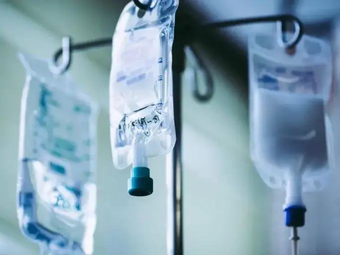

Лечение алкоголизма на дому
Лечение алкоголизма при помощи кодирования и капельного введения перепаратов
Работаем в Одессе, Киеве, Львове, Харькове, Днепре, Запорожье

Работаем в Одессе, Киеве, Львове, Харькове, Днепре, Запорожье
Это длительный комплекс медикаментозного и психотерапевтического лечения с целью достижения полного отказа пациента от спиртосодержащих напитков. С каждым днем количество людей которые злоупотребляют алкоголем и не могут отказаться от пагубной привычки все больше. С это проблемой медицинский центр UmbrellaPlus сталкивается каждый день. Только опытные врачи наркологи помогут именно в лечении алкоголизма с пожизненной трезвостью, а не только вывода из запоя в стационаре или на дому.
Самый эффективный метод лечения алкоголизма является комбинированная кодировка от алкоголя которое включает химические блокаторы снимающие тягу к алкоголю или же препараты вызывающие сильнейший токсический эффект в случаи если пациент принимает спиртосодержащие напитки. Так же необходимо пройти курс психотерапии который поможет поменять жизненные убеждения пациента и подготовить его к дальнейшей трезвой жизни без кодировки.
Стоимость лечения алкоголизма индивидуальна.
Анонимно

"Постійно викликаю на допомогу хлопців коли заїжаю в Одесу на відпочинок, порекомендували друзі, завжди після гулянок мене спасають, рекомендую"
Анонимно
"Выражаем благодарность клинике за оперативность и грамотный подход в лечении. Заказывали нарколога на дом, провели консультацюя, установить диагноз и назначили капельницу от продолжительного запоя. Лечение уже дало свои результаты, и мы признательны доктору за его помощь! Спасибо за профессионализм и заботу!"
Анонимно
"Было очень плохо после употребления, у меня возникли температура, головная боль, сильная слабость и тошнота. Я заказал капельницу для детоксикации организма. Владислав Алексеевич приехал всего через час после звонка, прокапал капельницу, предоставил лечение и дал рекомендации. Сразу почувствовалось улучшение. Окончательно я пришел в себя после сна на утро. Это действительно помогает, и я даже не мог предположить, что результат будет настолько хорошим. Обратился за помощью к врачам центра "Амбрелла", потому что надежды на то, что сам справлюсь, уже не оставалось. Огромное спасибо врачам за их помощь и заботу!"
Анонимно
"Я злоупотреблял спиртным около месяца, но сам этого не замечал. Недавно мой организм дал сбой, и я решил пройти курс лечения и прочистить свой организм. Обратился к наркологу, и он назначил мне восстановительную терапию, сделали кардиограмму. Все прошло быстро и эффективно, и я оценил профессиональный подход, который предоставили мне в центре Амбрелла"
Анонимно
"Спасибо за лечение моего сына! Максимально эффективно и оперативно была оказана помощь"
Анонимно
"Большое спасибо за своевременную и квалифицированную помощь! Нам потребовалась помощь на дому для моего мужа, и врач приехал очень быстро. С его помощью муж пришел в чувства и почувствовал облегчение. Мы благодарны врачу за его профессионализм и заботу о нас. Это дало нам уверенность, что мы находимся в надежных руках. Огромное спасибо за вашу поддержку!"
Анонимно
"Выражаю искреннюю благодарность за лечение, заботу и поддержку врачу Михаилу Валентиновичу. В выходной день мне понадобилась детоксикация после употребления алкоголя, и я вызвал врача. Весь процесс прошел оперативно, и я хочу отметить, что врач прибыл на адрес очень быстро. Капельница была поставлена профессионально и без проблем. Я полностью удовлетворен результатами процедуры. Благодарю за качественную помощь!"
Анонимно
"Опытный врач, полная анонимность. Цены на услуги были адекватны для предоставляемой помощи. Врач прибыл довольно быстро, и после проведения капельницы, мое здоровье заметно улучшилось. Весь процесс был организован оперативно и с заботой о пациенте. Врачи работали с преданностью и профессионализмом!"
Отзыв можно оставить после оказания вам услуги
Приезд в течении 60 минут от момента поступления заявки
В таких городах как Одесса, Киев, Львов, Харьков, Днепр
Мы оказываем профессиональную доказательную медицинскую помощь. Гарантией является наше имя.